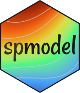

Spatial Analysis and Statistical Modeling with R and spmodel
2024 Society for Freshwater Science Conference
Welcome
Hello üëã and welcome! The purpose of this website is to provide workshop materials for the ‚ÄúSpatial Analysis and Statistical Modeling with R and spmodel‚Äù workshop at the 2024 Society for Freshwater Science Conference in Philadelphia, PA, USA. To view the workshop‚Äôs accompanying workbook, visit here. To download the workshop‚Äôs slides, visit here. Slides are downloaded by clicking the ‚ÄúDownload raw file‚Äù button via the ellipsis or downward arrow symbol on the right side of the screen.
It is our hope that this workshop will provide attendees with the conceptual and practical knowledge to incorporate geospatial analyses into their R workflow to improve the interpretation of spatial data. In particular, this workshop will focus on the R package spmodel.
What is spmodel? The spmodel R package (Dumelle, Higham, and Ver Hoef 2023) can be used to fit, summarize, and predict for a variety of spatial statistical models. Some of the things that spmodel can do include:
- Fit spatial linear and generalized linear models for point-referenced and areal (lattice) data
- Compare model fits and inspect model diagnostics
- Predict at unobserved spatial locations (i.e., Kriging)
- And much more!
spmodel Website
spmodel’s website contains all the resources you need to get started using the software.
Why use spmodel? There are many great spatial modeling packages in R. A few reasons to use spmodel for spatial analysis are that:
-
spmodelsyntax is similar to baseRsyntax for functions likelm(),glm(),summary(), andpredict(), making the transition from fitting non-spatial models to spatial models relatively seamless. - There are a wide variety of
spmodelcapabilities that give the user significant control over the specific spatial model being fit. -
spmodelis compatible with other modernRpackages likebroomandsf.
Throughout the rest of these materials, we introduce spmodel through a few applied examples. We connect basic summary output with the spatial linear model for both point-referenced and areal (lattice) data. We discuss prediction and generalized linear spatial models for response variables whose distribution is not Gaussian. Along the way, we mention a few other advanced spmodel features. Then we show how to use spmodel to analyze several real freshwater data sets.
Workshop Summary. The spmodel R package can be used to fit, summarize, and predict for a variety of spatial statistical models for both point-referenced and areal spatial data. What distinguishes spmodel from many other R packages for modeling spatial data is (1) a syntactic structure similar to the syntactic structure of base R functions lm() and glm() that makes spmodel relatively easy to learn, (2) the breadth of options that give the user a high amount of control over the model being fit, and (3) compatibility with other modern R packages like broom and sf. By the end of this workshop, participants can expect to be able to use spmodel to fit spatial linear models for point-referenced and areal (lattice) data, make predictions for unobserved spatial locations, fit anisotropic models for point-referenced data, fit spatial models with additional non-spatial random effects, fit generalized linear models for spatial data, and use big data methods to analyze large spatial data sets. More information on spmodel can be found on our website at https://usepa.github.io/spmodel/.
Workshop Agenda
- 9:00am - 9:30am ET: Introductions and Motivating Examples
- 9:30am - 11:30am ET: Spatial Modeling in
R - 11:30am - 12:30pm ET: Geospatial Analysis in
R - 12:30pm - 1:30pm ET: Lunch
- 1:30pm - 2:30pm ET: Geospatial Analysis in
R - 2:30pm - 3:30pm ET: Applications to Real Aquatic Data
- 3:30pm - 4:00pm ET: Questions and Wrap Up
Support Introduction
Lara Jansen (she/her/hers) is an aquatic community ecologist and an ORISE postdoctoral fellow working on predictive models of benthic macroinvertebrate communities across the conterminous US in relation to watershed factors. Lara completed her PhD in Environmental Science at Portland State University in 2023, studying the drivers and dynamics of harmful algal blooms in mountain lakes with Dr. Angela Strecker.She obtained a MS in Natural Resource Sciences at Cal Poly Humboldt University with a thesis focused on the downstream impacts of dam flow regulation on benthic macroinvertebrate and algal communities.
Wade Boys (he/him/his) is a graduate student at the University of Arkansas broadly interested in understanding how aquatic ectotherms will respond to climate change, especially the role of phenotypic plasticity in adapting to a warming world. Wade is a firm believer that science is not finished until it is communicated. In addition to research, he finds great purpose in cultivating community and connecting science to our everyday experiences as humans.
Setup
Install R and RTools
Prior to the start of the workshop everyone will need to have the software installed and tested. You will need to have R, Rtools, and RStudio. Please install at least R version >= 4.0 and the compatible version of RTools.RTools will be necessary to install non-CRAN repositories from GitHub (see below).
Install RStudio
There are many graphical user interfaces (GUIs) that make it easier to interact with R. We recommend using Posit’s RStudio](https://posit.co/products/open-source/rstudio/).
Install R Packages
The packages that we use throughout this workshop are listed below. To install them run:
Common Packages
install.packages('tidyverse')
install.packages('ggplot2')
install.packages('data.table')
install.packages('tictoc')
install.packages("remotes")
install.packages("devtools")Geospatial Packages
In addition to these core R packages, we’ll be using several CRAN packages specifically developed for GIS tasks or handling/obtaining spatial data:
install.packages('sf')
install.packages('terra')
install.packages('prism')
install.packages('tigris')
install.packages('nhdplusTools')
install.packages('mapview')
install.packages('FedData')
install.packages('tidyterra')
install.packages('jsonlite')
install.packages('geojson')
install.packages('geojsonio')
install.packages('maps')New EPA Packages
Finally, we will use three new R packages developed by researchers at the U.S. Environmental Protection Agency. The package spmodel, in particular, will form the basis of this workshop.
spmodel - The spmodel package is the basis of this workshop.

StreamCatTools - The StreamCatTools package retrieves StreamCat and LakeCat data via an API.

finsyncR - The finsyncR package greatly facilitates the retrieval and harmonization of EPA and USGS stream macroinvertebrate and fish data.

To install these packages:
# Install spmodel from CRAN
install.packages('spmodel')
# Install remotes package to allow GitHub installation of finsyncR and StreamCatTools
remotes::install_github('USEPA/finsyncR')
remotes::install_github('USEPA/StreamCatTools')Lastly, we have created an R package for this workshop that contains some data we will work with today. To install, run
remotes::install_github('USEPA/spdata.sfs24')rlang (1.1.1 -> 1.1.3 ) [CRAN]
glue (1.6.2 -> 1.7.0 ) [CRAN]
cli (3.6.1 -> 3.6.2 ) [CRAN]
utf8 (1.2.3 -> 1.2.4 ) [CRAN]
fansi (1.0.4 -> 1.0.6 ) [CRAN]
Rcpp (1.0.10 -> 1.0.12) [CRAN]
e1071 (1.7-13 -> 1.7-14) [CRAN]
units (0.8-2 -> 0.8-5 ) [CRAN]
classInt (0.4-9 -> 0.4-10) [CRAN]
package 'rlang' successfully unpacked and MD5 sums checked
package 'glue' successfully unpacked and MD5 sums checked
package 'cli' successfully unpacked and MD5 sums checked
package 'utf8' successfully unpacked and MD5 sums checked
package 'fansi' successfully unpacked and MD5 sums checked
package 'Rcpp' successfully unpacked and MD5 sums checked
package 'e1071' successfully unpacked and MD5 sums checked
package 'units' successfully unpacked and MD5 sums checked
package 'classInt' successfully unpacked and MD5 sums checked
The downloaded binary packages are in
C:\Users\mdumelle\AppData\Local\Temp\Rtmpsdj1RL\downloaded_packages
── R CMD build ─────────────────────────────────────────────────────────────────
* checking for file 'C:\Users\mdumelle\AppData\Local\Temp\Rtmpsdj1RL\remotesed185b353aa6\USEPA-spdata.sfs24-540d7adc59f2699ab48d71144c8fb0853a56e48f/DESCRIPTION' ... OK
* preparing 'spdata.sfs24':
* checking DESCRIPTION meta-information ... OK
* checking for LF line-endings in source and make files and shell scripts
* checking for empty or unneeded directories
* building 'spdata.sfs24_0.0.0.9000.tar.gz'
How to follow along with material
This workshop was built using Quarto and rendered to html. If you are familiar with using git and GitHub, you can fork and clone this repository, or simply clone directly and open the corresponding .qmd files to follow along with material in RStudio. You can also copy code snippets from the rendered book site and paste into your code files in RStudio.
Citation Information
If you use these software packages in a formal report or publication, please cite them. For example, the spmodel citation is available by running:
citation(package = "spmodel")
To cite spmodel in publications use:
Dumelle M, Higham M, Ver Hoef JM (2023). spmodel: Spatial statistical
modeling and prediction in R. PLOS ONE 18(3): e0282524.
https://doi.org/10.1371/journal.pone.0282524
A BibTeX entry for LaTeX users is
@Article{,
title = {{spmodel}: Spatial statistical modeling and prediction in {R}},
author = {Michael Dumelle and Matt Higham and Jay M. {Ver Hoef}},
journal = {PLOS ONE},
year = {2023},
volume = {18},
number = {3},
pages = {1--32},
doi = {10.1371/journal.pone.0282524},
url = {https://doi.org/10.1371/journal.pone.0282524},
}Disclaimer
The views expressed in this manuscript are those of the authors and do not necessarily represent the views or policies of the U.S. Environmental Protection Agency or the U.S. National Oceanic and Atmospheric Administration. Any mention of trade names, products, or services does not imply an endorsement by the U.S. government, the U.S. Environmental Protection Agency, or the U.S. National Oceanic and Atmospheric Administration. The U.S. Environmental Protection Agency and the U.S. National Oceanic and Atmospheric Administration do not endorse any commercial products, services, or enterprises.